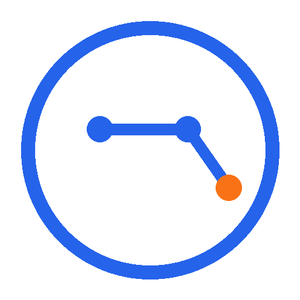
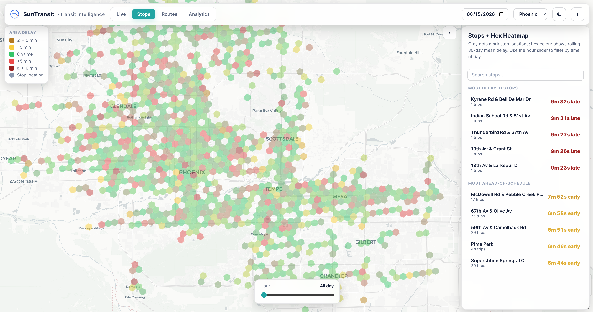
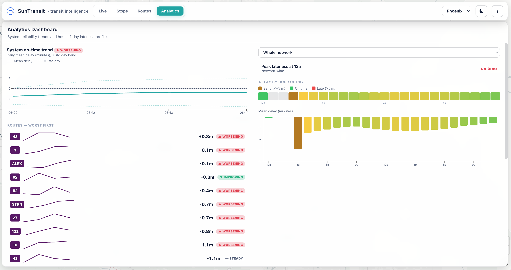
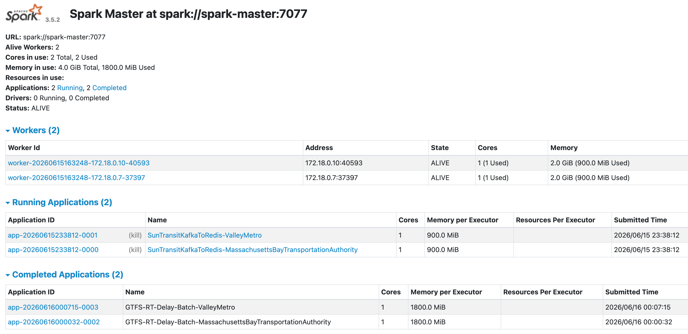

SunTransitReal-time transit tracking that turns GTFS-Realtime feeds into live vehicle positions, stop-level delays, predicted ETAs, and a historical dataset of how every trip actually ran.
- 2
- transit agencies integrated
- 13M–34.6M
- vehicle-location messages processed per day
- Stop-level
- delays: actual arrivals vs. scheduled trips
- Historical
- trip records kept for later analysis
Why
Riders usually get fragments: a static route plan, an ETA, or a map that doesn't say whether the system is running well. SunTransit combines live location feeds with schedule-aware delay computation, so you can see where buses and trains are right now and how reliable they've been at each stop, trip and agency.
- Track buses and trains on a live map.
- See whether each vehicle is on time or late at each stop.
- Keep historical records for deeper analysis.
- Useful to agencies, developers and urban mobility research.
Coverage
- Valley Metro
- Phoenix, Arizona
- MBTA
- Boston, Massachusetts
- Deployment
- Cloud-ready, currently run locally to keep costs down
- For
- Riders, transit operators, urban planners, mobility researchers
Architecture
The pipeline polls agency feeds, joins live observations with the schedule, and computes delay at each stop. Two goals: keep the live view fast, and keep a clean dataset for analysis later.
- Ingest live agency feeds on a recurring schedule.
- Join real-time observations with schedule data.
- Compute arrival delay at the stop and trip level.
- Store processed events for the dashboard and long-term analysis.

ETA model
Measuring delay after the fact is useful; predicting it is better. SunTransit forecasts how late a vehicle will be at each upcoming stop, so the dashboard shows schedule-aware ETAs instead of raw timetable times.
A LightGBM model is trained and served on AWS SageMaker. Every month a pipeline preprocesses historical trips, trains a candidate, and promotes it only if it beats the current accuracy bar. It's served from a scale-to-zero serverless endpoint that the API queries in the background.
- One call returns predicted delay for the next 1–15 stops of a trip.
- Features: current delay, route, direction, stop position, hour, day of week.
- Gated retraining: a new model ships only if it clears the threshold.
- Serverless inference keeps prediction cheap between bursts.
- 86.7s
- mean absolute error of predicted arrival delay
- ~28%
- lower error than the persistence baseline (119.7s)
- 1–15
- stops of look-ahead per inference call
- Monthly
- automated retrain with gated model registration
Interface



Outputs
Dataset
A historical record of how each trip actually ran against its schedule. This is the part most useful for reliability studies.
Dashboard
Live vehicle positions and on-time performance, readable by operators and riders alike.
ETA model
Turns the historical dataset into forward-looking arrival predictions, served from SageMaker.
Dataset access
Working on transit analytics, urban systems or modeling and want the historical data? Email me. The only ask is attribution if you use it in a project, paper or public release.
Stack
Python · Kafka · Spark · AWS SageMaker · Docker · Linux · Jupyter